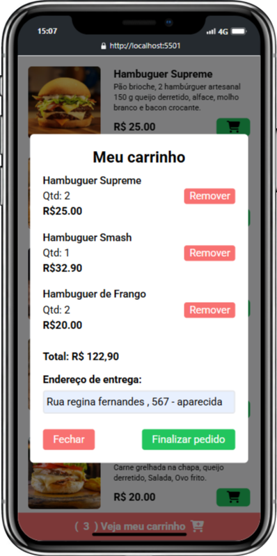

Cardapio online
Dev Burguer


Sobre o projeto
Cardápio digital para lanchonete
Um cardápio online interativo para a lanchonete ficticia DEV Burguer, onde os clientes podem visualizar o menu, adicionar itens ao carrinho e finalizar pedidos diretamente pelo WhatsApp.
Este projeto foi desenvolvido acompanhando um tutorial no YouTube,
com o objetivo de criar uma solução prática para pequenos negócios
do ramo alimentício.
Implementei funcionalidades como carrinho de compras dinâmico,
validação de horário de funcionamento e integração com WhatsApp para
envio de pedidos.
Ferramentas Usadas
Figma (para o design)
HTML, CSS, Javascript, Tailwind Css
Cronograma
2 dias (Fevereiro-2025)
Recursos & Experiência
- Carrinho de compras: Adição, remoção e atualização dinâmica dos itens selecionados..
- Cardápio digital completo: Exibição de produtos com imagens, descrições e preços.
- Verificação de horário: Sistema que checa se a lanchonete está aberta ou fechada com base no horário atual.
- Integração com WhatsApp: Envio automático do pedido completo diretamente para o WhatsApp do estabelecimento.
Desafio e Aprendizado
Desafios
- Implementar a lógica de atualização dinâmica do carrinho mantendo a consistência dos dados.
- Criar um sistema de validação de endereço que garanta informações completas antes do envio do pedido.
O que aprendi
- Aprimorei minhas habilidades em TailwindCSS para criar interfaces adaptáveis a diferentes dispositivos.
- Aprendi a integrar sistemas web com aplicações de mensagens para criar fluxos de pedido completos.
O Projeto Final
O resultado é uma aplicação limpa, intuitiva e funcional, com foco na usabilidade e na experiência do usuário em diferentes dispositivos e modos de visualização.
